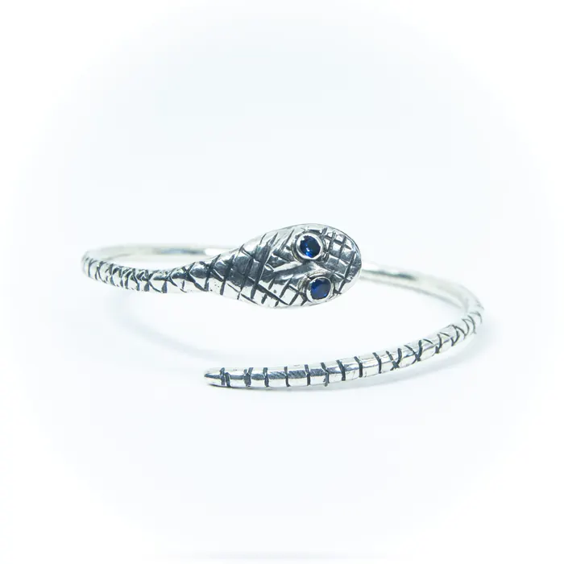
Pulsera de serpiente ajustable120,00 € IVA incluido
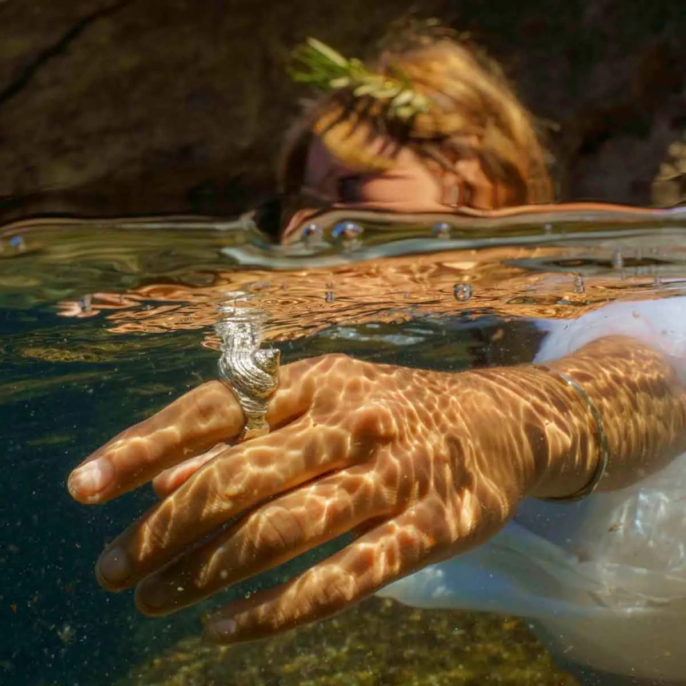
Colección orgánicaVer la colección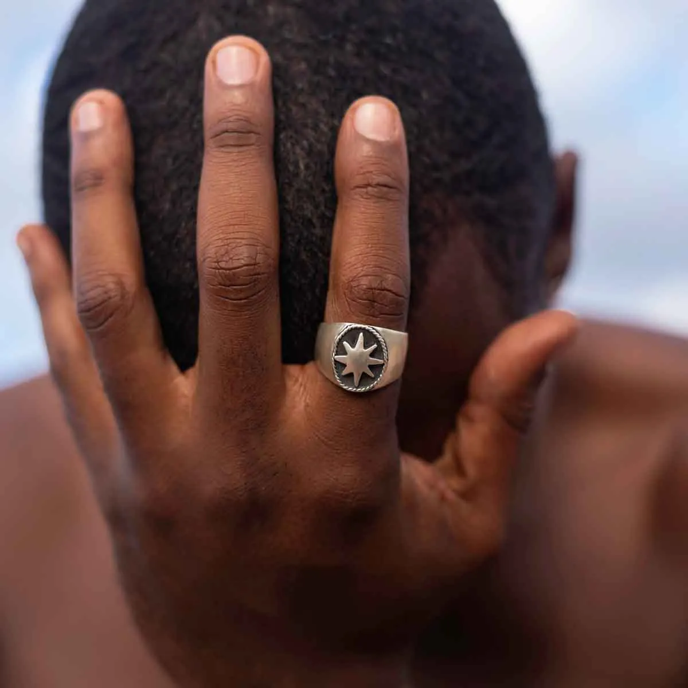
Colección geométricaVer la colección
Pulsera de serpiente ajustable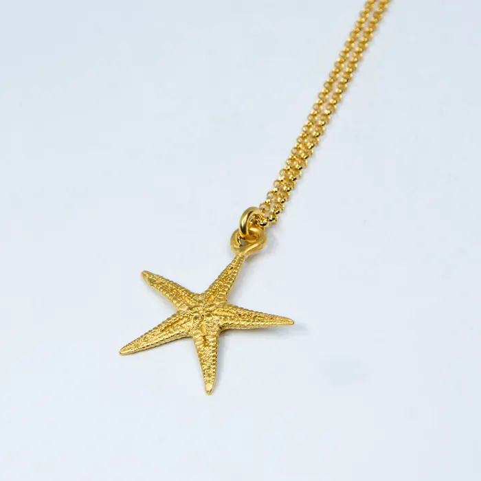
Collar estrella de mar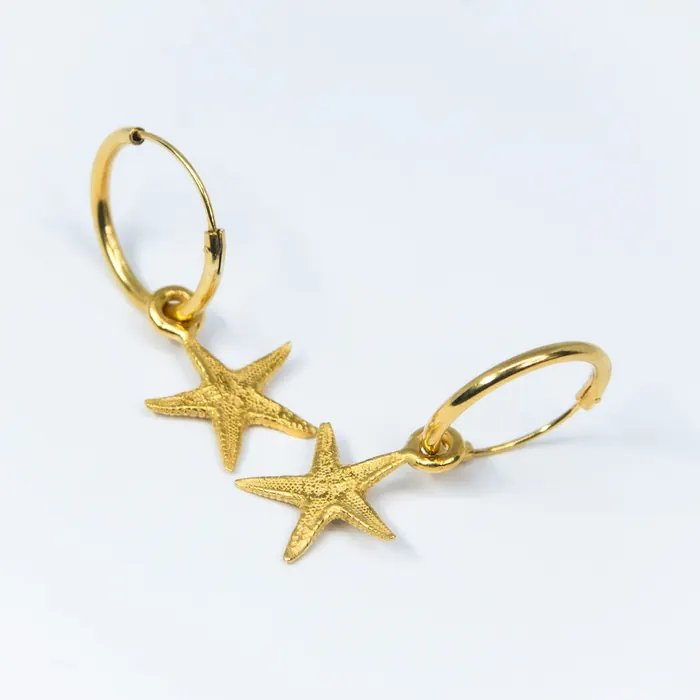
Aros estrella de mar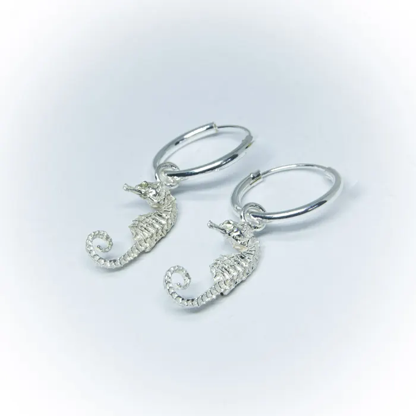
Aros caballito de mar Anillo pata de pulpo
Anillo pata de pulpo
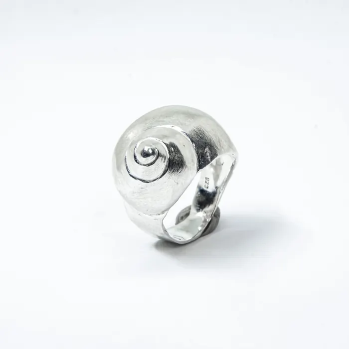
Anillo de caracola mediano Aros ancla
Aros ancla
 Anillo laberinto con topacio
Anillo laberinto con topacio
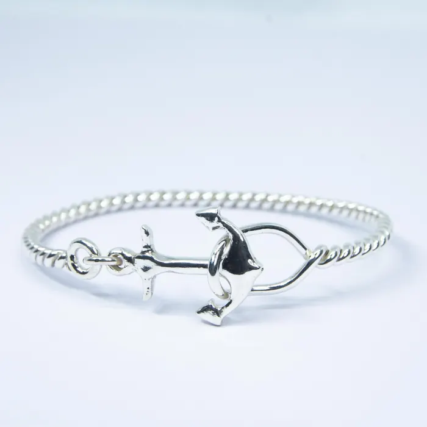
Pulsera ancla Pendientes de coral
Pendientes de coral
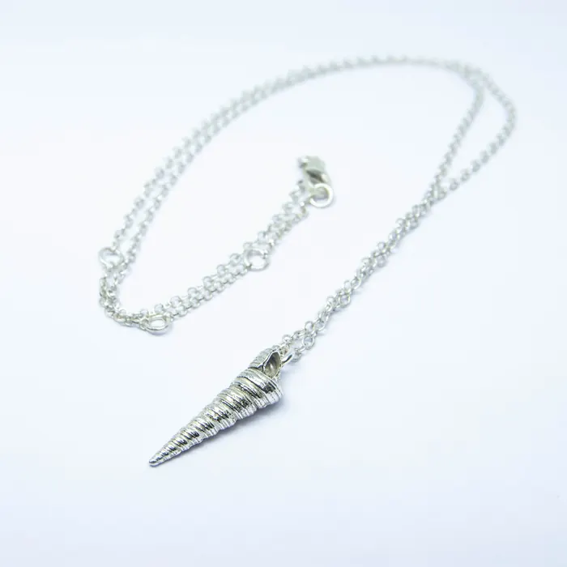
Collar caracola cónica pequeña Anillo costilla de serpiente
Anillo costilla de serpiente
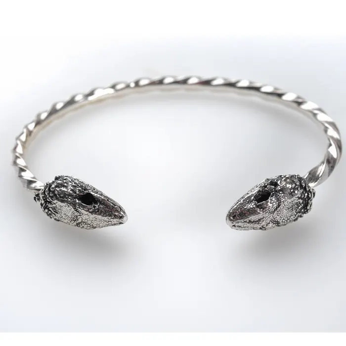
Pulsera de cabezas de sargantana Pendientes de semilla triangular
Pendientes de semilla triangular
 Pendientes rama
Pendientes rama
 Aros rama
Aros rama
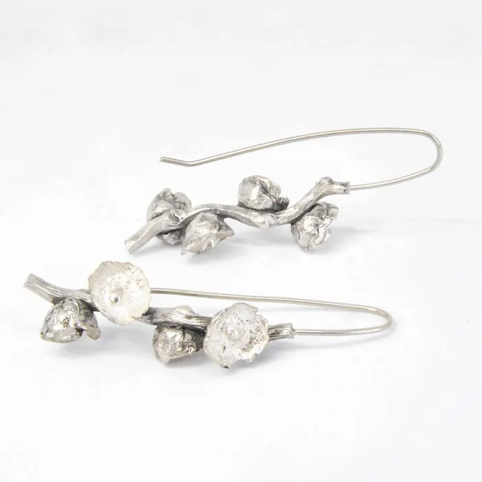
Pendientes flor datil Collar cabeza de sargantana
Collar cabeza de sargantana
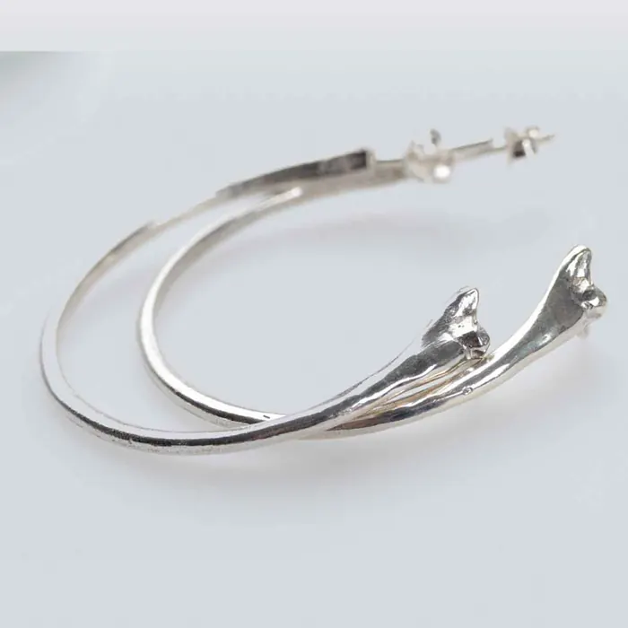
Aros costilla de serpiente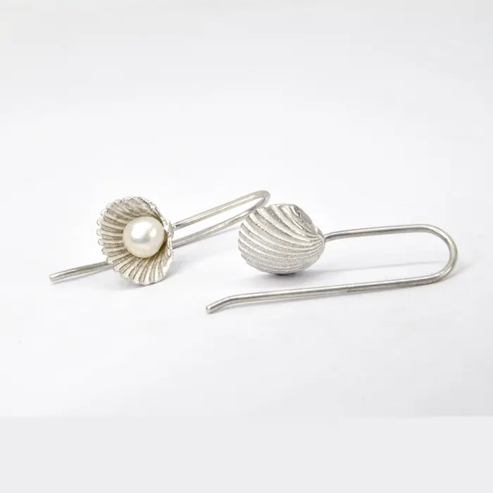
Pendientes concha perlas Pendientes de caracola
Pendientes de caracola
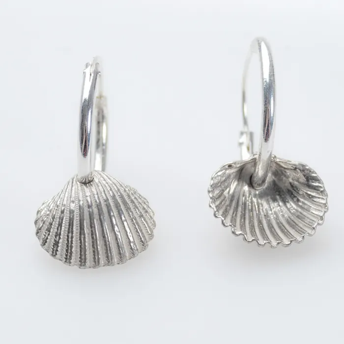
Aros concha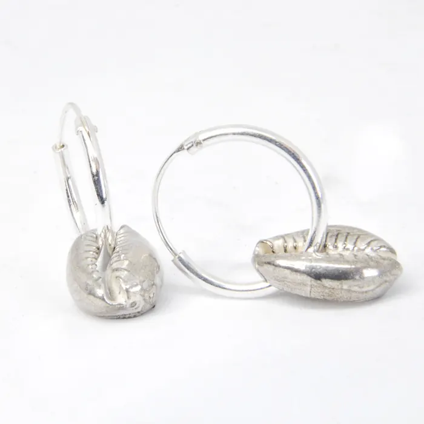
Aros cauri Collar cabeza de pájaro
Collar cabeza de pájaro